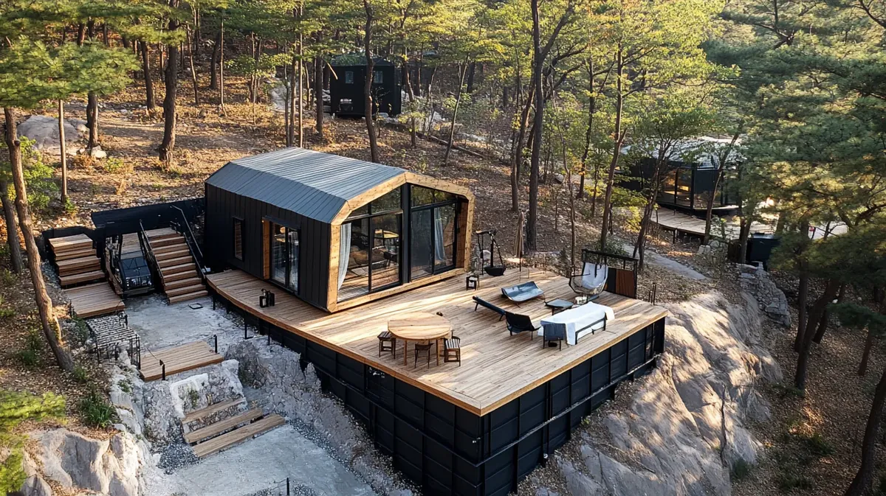

내구성 · 다목적 · 사계절
D-시리즈 돔
볼트 조립식 특허 기술로 완성한 극한의 구조 강도. 5m~15m 8가지 사이즈, 파노라마 베이 윈도우, 사계절 단열. 8m 이상 로프트(2층) 설치 가능.
자세히 보기 →

내구성 · 우아함 · 사계절
S-시리즈
5가지 스타일, 11가지 모델. 2인용 컴팩트부터 다실 럭셔리 빌라까지. 풀 글라스월 슬라이딩 도어로 자연과 하나 되는 공간.
자세히 보기 →

유니크 · 크리에이티브 · 프리미엄
Signature 시리즈
Signature-O 오벌 스위트, Signature-A 에이펙스 로지, Signature-P 파노라마 파빌리온, Signature-H 헥사 라운지, Signature-T 트라이앵글 독채, Signature-Q 큐브 모듈, Signature-M 마이크로 쉘터, D-시리즈 돔 — 독창적 디자인의 결정체.
자세히 보기 →

턴키 · 올인원 · 자동화
모듈러 시스템
욕실, 데크, 태양광 — 올인원 모듈러 시스템. 글램핑 창업에 필요한 모든 것을 한 번에.
자세히 보기 →